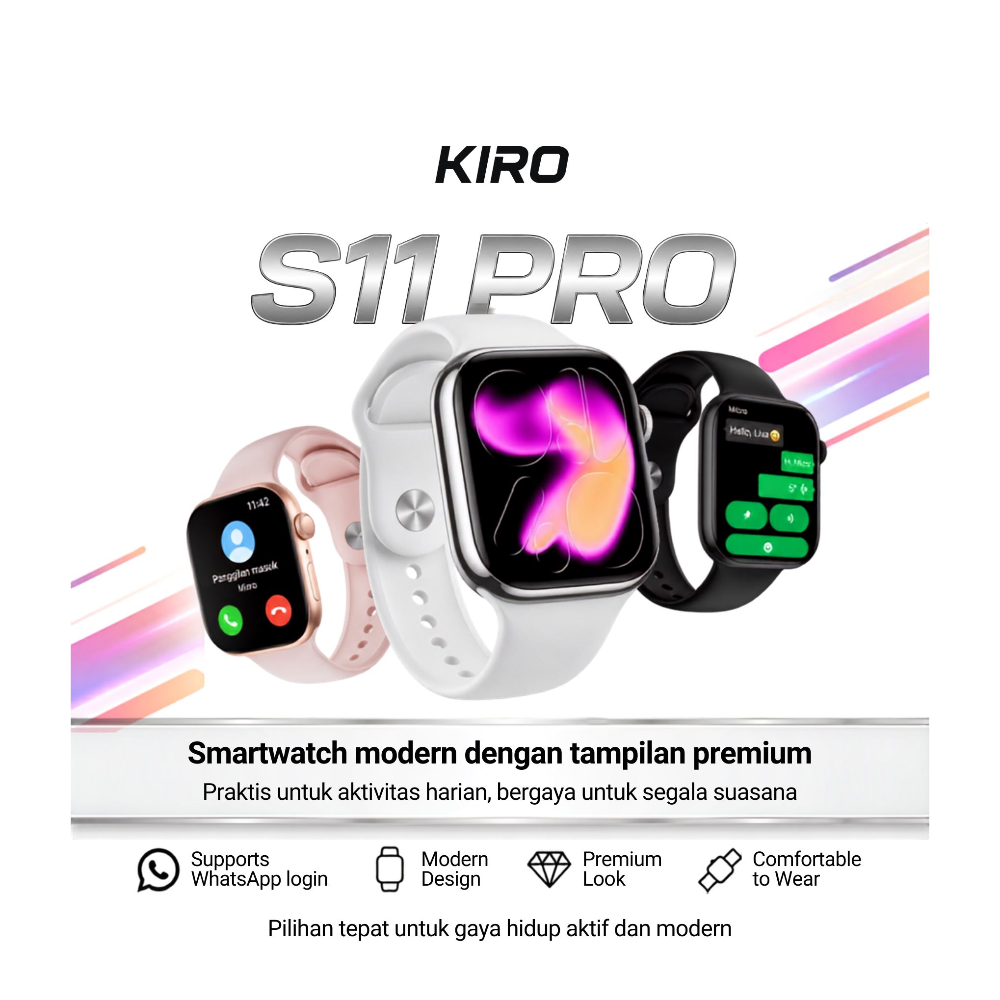

Smart technology for your everyday life.
Modern smartwatch designed for everyday connectivity, productivity, fitness and personal expression.

Everything you need, right on your wrist.
Selected features of KIRO WATCH S11 Pro, presented simply and clearly.
2.08” HD Display
320 × 385 pixel display in a compact modern body.
WhatsApp Support
Text, voice, emoji and quick reply functions.
Bluetooth Calling
Stay connected through compatible Bluetooth features.
Watch Faces
1000+ free watch faces for everyday personalization.
NFC Access
Practical NFC access functionality.
Android & iOS
Compatible with both major mobile platforms.
IP67 Protection
Designed with an IP67 protection rating.
Everyday Ready
Useful functions for activity, work and daily routines.
Technology that fits naturally into your day.
The KIRO WATCH S11 Pro combines a large HD display, smart connectivity, personalization features and practical everyday functions in a modern smartwatch design.
Stay connected without reaching for your phone.
KIRO WATCH S11 Pro supports WhatsApp-related functions including text chat, voice, emoji and quick replies.
Make your watch yours.
Choose from 1000+ free watch faces and personalize the interface with supported background and menu options.
Practical functions, without the clutter.
A selection of useful tools available on the S11 Pro.